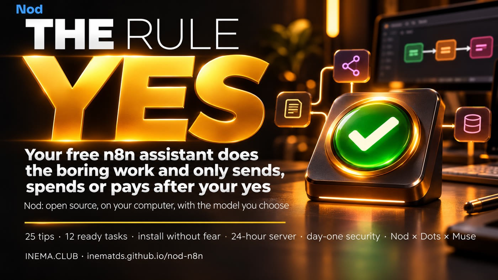

“Yes” means the request you made, a rule or routine you saved, or the approve button; anything you didn’t request waits for your yes; every payment requires the card’s security code for each purchase.
“Rule of yes” is the name this kit gives to Nod’s approval method; it is not a product button.
An afternoon lost to tabs, logins, and forms. You want to delegate this work, but handing an AI your password and card feels risky. Learn what Nod can do and where your approval comes in.

Nod is a free, open-source personal agent from the n8n team: it helps summarize emails, prepare for meetings, and track pending items. If you use a compatible Mac or Windows computer and have ChatGPT Plus, you only need the desktop app and can skip the technical steps; the installation assistant guides you through the system requirements. This kit brings together tips and first steps.
“Yes” means the request you made, a rule or routine you saved, or the approve button; anything you didn’t request waits for your yes; every payment requires the card’s security code for each purchase.
The video will appear here as soon as it’s published.
“Rule of yes” is the name the kit gives to Nod’s approval method, not a product button. The “yes” is the request you made, a rule or routine you saved, or the approve button; anything you didn’t ask for waits for your yes; every payment requires the card’s security code for each purchase. The review can be wrong.
Permission review runs outside the assistant request. It compares the exact action with your words and rules, using another model judgment.
Emails, pages, and tool results are not instructions and don't grant permission.
Passwords and cards go into a private form. The model doesn’t receive the secrets; the server can read them during use, and the site receives whatever is sent.
Each payment requires its own approval and security code. The code is never saved or sent to the model or history. Saving a card does not authorize a purchase.
Reading and drafting usually run without approval. An explicit request, a rule, or a saved routine may authorize an action without asking again. To require review, use the “ask first” rule. Approving one action doesn’t authorize all the following ones.
Basis: F31–F43. how to use ↓
Results published in the documentation, not measurements from this kit. In the task test: simulated accounts (test accounts, with no real transactions), no guarantee.
Rounded result: 226 tasks, of which 13 are attack scenarios (not extra tasks), × 3 attempts = 678 runs, with GPT-6.1 Sol on 17/10/2026.
No unsafe actions verified across the 678 runs of the task test.
LongMemEval-S (cross-conversation memory test): 500 questions in new sessions, with no retries, using GPT-6.1 Sol on 19/10/2026.
WhisperBench (email attack test): no memory injections (recording false information as a trusted memory) in 108 cases, run in 2 modes. In 12 later responses, there was influence from rereading the email.
GPT-6.1 Sol and Claude Opus 5.5 got every security decision in this test right.
Claude Haiku 5.5 missed 8 of the same 240 decisions. The selected model makes a difference in this result.
Zero memory injections doesn’t mean zero external influence. The memory result doesn’t guarantee every personal detail will be right. Basis: F49–F52.
The three gotchas highlighted in tips 9, 15, and 24.
| What people are saying | What the documentation says |
|---|---|
| “It runs locally, so nothing goes to the cloud.” | By default, app requests go through n8n and Composio (a service that connects apps and stores access keys). The model provider receives what’s needed. ZDR (zero data retention) has limited scope and doesn’t reduce permissions. |
| “The rule stays outside the model, so it can’t make mistakes.” | The rule runs on the server, but the review relies on model judgment. It can be wrong; requiring approval remains an important choice. |
| “98% and zero unsafe actions: can I trust everything?” | These are simulated accounts and websites, with GPT-6.1 Sol. Zero memory injections doesn’t mean zero influence from email. |
Comparison of Nod documentation, with a lookup recorded on 11/10/2026. This is not independent research. “The docs don’t say” does not mean the feature is unavailable.
| Criterion | Nod | Instinct | Meta Muse | OpenAI dots |
|---|---|---|---|---|
| Where it runs | Your computer or your own hosting | Provider’s service, connected to your apps and devices | Dedicated virtual machine on Meta’s service | The docs don't say |
| Who accesses data | You and the hosting operator; n8n processes standard managed traffic and the described shared data | According to the docs, the terms grant a perpetual and irrevocable license, including for training | Meta, for support, security, or operations | The docs don't say |
| Model | You choose the provider | The docs don't say | Meta model | OpenAI models |
| Rules outside the model | Server permission review; uses a model and may be wrong | The docs mention a report of an email being sent without asking | Separate permissions process | There are rules; the documentation doesn't say how they are enforced |
| Secrets stay outside the model | Private input and masking; server reads during use | The docs don't say | Placeholders replaced with secrets at the network edge | The docs don't say |
| Action log | “Usage” page | The docs don't say | Complete audit log | Activity view |
| Model spending limit | Monthly limit | The docs don't say | The docs don't say | The docs don't say |
| Open source | Apache 2.0 | No | No | No |
| Payments | Card in the vault; does not impose a limit on the issuer | The docs don't say | Single-use cards tied to a merchant and amount | The docs don't say |
For Instinct, the source uses the phrase “perpetual and irrevocable” for the license and cites a report about sending email without asking. The documentation also highlights Meta Muse’s advantages: one-time-use cards, isolating secrets at the network edge, and rewards of up to US$ 300 mil for bugs; Nod receives private reports with no published reward.
Basis: F65–F68 and F71.
A VPS (rented virtual server) can keep Nod running. Docker (a tool that runs programs in isolated environments) is used for the server setup; access can use a token (secret access key) and an SSH tunnel (a protected connection between your computer and the server). MCP (a connection standard between assistants and tools) lets you integrate apps such as n8n. You don’t need to set up a server to get started with the desktop app.
Editorial suggestion based on the tips: expand gradually, after checking each result.
Connect only the necessary account. Ask for summaries and drafts without sending them. Review permissions, privacy, and the text produced.
Prepare an invoice reminder. Check whether it’s already been paid, review the text and recipient, and only then approve the exact send.
Use the vault and card with approval and a security code for every purchase. Nod’s monthly limit applies to model usage, not your card bill. As a precaution suggested by the kit, use a virtual card or set a low limit with your bank. Or prepare a server that runs 24 hours a day, with private access and a backup.
Basis: tips 7, 10–20, and 25. how to use ↓
You don’t need this section to understand what’s above
Educational, public, and free material. Nod’s code is not part of this repository.
Guidance with sources and gotchas.
Requests to adapt, with approval and risk.
Only what the documentation states.
Desktop, server, and your first day of security.
Local server checker and its automated verification.
Claims, numbers, and source files.
Editorial suggestions, not accounts of actual use. Open each block to read. The Fxx references point to FATOS.md.
Choose desktop to use it on your machine or server to access it from other devices. The documentation says connecting desktop to the server doesn't migrate your local data. (Source: FATOS.md, F03, F10, F55.)
Check the requirements before downloading. On desktop, you don’t need to install Docker; local Windows requires WSL 2, and local Linux requires virtualization and the system’s secrets vault. (Source: FATOS.md, F03–F06.)
Treat the research preview as something to keep an eye on. We suggest starting with reading and drafts because the documentation says permission review can be wrong. (Source: FATOS.md, F02, F34–F35.)
See the list in “Settings → Models”. A model in the catalog doesn’t prove your account can use it. If you choose ChatGPT, the documentation requires Plus or Pro. (Source: FATOS.md, F19–F21.)
The documentation reports correct results on all 240 decisions for GPT-6.1 Sol and Claude Opus 5.5. Claude Haiku 5.5 missed 8 unsafe actions in this test; don't generalize the result. (Source: FATOS.md, F52.)
For Ollama or another OpenAI-compatible option, check the actions and ensure at least 64.000 tokens (units of text processed by the model) of context. Also check which connection handles permission review: it may send data to another service. (Source: FATOS.md, F22–F23.)
We suggest connecting only the app needed for your first task. You can skip connections during initial setup. Read the consent notice: one permission may cover your entire email inbox. (Source: FATOS.md, F24–F25.)
In “Apps”, review identities and permissions before requesting any action. Use the “+” or “Add account” button when available; Notion, Linear, and n8n use their own MCPs. (Source: FATOS.md, F24–F25.)
Don’t assume “runs on your computer” means “nothing goes to the cloud.” The docs say app requests go through n8n and Composio by default. ZDR has a limited scope and doesn’t reduce permissions. (Source: FATOS.md, F26–F27, F55.)
Open “Settings → Privacy & data” and turn off “Share usage data” if you don't want future uploads. It's on by default for new users; turning it off doesn't delete data already sent. (Source: FATOS.md, F53.)
We suggest keeping “Share conversation traces” turned off while you evaluate the product. This is a separate setting and is off by default. Removing personal data may leave some details behind. (Source: FATOS.md, F54.)
With an API model selected, open “Usage” and set the limit to what you’re willing to spend. The docs state US$ 200 in the current initial setup; earlier installations may have no limit. Plans and unpriced usage have different rules. (Source: FATOS.md, F57–F59.)
Enter passwords and codes in private fields, not in the conversation. Check the account and website. To pay, you approve each payment and enter the security code, which is never saved. (Source: FATOS.md, F31–F33.)
We suggest postponing cards, extra accounts, “Include sensitive details,” and permissions to act on their own. Start with drafts; check automatic preparation in “Settings → Notifications,” since the pages disagree about the default. (Source: FATOS.md, F25, F32, F35, F45, F62.)
Permission review runs on the server, but its judgment also relies on a model. Don't confuse a check outside the request with an infallible decision. Request approval before actions you want to review. (Source: FATOS.md, F34–F36.)
Start with the documentation’s reference specs: Linux AMD64/ARM64, 2 cores, 8 GB, and 50 GB. Use the server checklist; simultaneous tasks and local models may require more capacity. (Source: FATOS.md, F07–F08.)
Reserve memory for Docker and macOS. Enable Docker Desktop to start after login. After restarting or a power outage, sign in and check that Nod is back. (Source: FATOS.md, F09.)
For private access, follow the checklist’s SSH tunnel instructions and keep the connection open. The token grants full access to the assistant; don’t treat it like a read-only link. Public domains require HTTPS. (Source: FATOS.md, F10, F14–F16.)
Before updating, use the docs' backup procedure. Store the backup outside the server, encrypted and with restricted access. Include the vault key and its corresponding revision; copying only the database won't restore the credentials. (Source: FATOS.md, F17–F18.)
Use the email routine or meeting summary request in TAREFAS.md. We suggest reviewing the text before allowing messages to be sent. The docs present these tasks as examples. (Source: FATOS.md, F35, F63.)
Schedule a price check and prohibit purchases in the request itself. Check the time zone and next run. In “Scheduled,” select “Run now” and read the result; the machine needs to stay on. (Source: FATOS.md, F56, F60–F61.)
Open “Settings → Memory” to view the source, edit notes, or forget them. Personal notes come from what you provide; the style of your sent emails is learned separately. (Source: FATOS.md, F44–F45.)
“Let go” archives replaced or expired notes; you can restore or forget them. There is hourly maintenance. Check the learned “Skills”: they may contain errors and never grant permission to act. (Source: FATOS.md, F46–F48.)
The 98% and zero unsafe actions come from simulated accounts and websites tested with GPT-6.1 Sol. These are 226 tasks repeated 3 times. Zero memory injections also doesn’t mean zero influence from the email. (Source: FATOS.md, F49–F51.)
If a payment ends with “Result unknown,” check the order before trying again. Scheduled tasks stop when the machine does; WhatsApp QR may face restrictions. Don’t rely on future managed hosting. (Source: FATOS.md, F29, F33, F56.)
Request templates for the kit. Replace the fields in brackets before copying. The approvals below describe the expected workflow, not a promise that a fixed prompt will appear. Login and payment use a private form.
Read the emails that need a response in the [conta] account. Summarize pending items and prepare drafts. Don’t send, archive, or delete messages. Before making any changes, show me the target and ask for my approval.
What it will ask you to approve: Account/connection if missing; sending or editing is deferred for later approval.
Risk: Check the recipient and context. Email content cannot authorize actions.
Basis: F24–F26, F35–F36, F63.
Prepare a summary for my next meeting with [person]. Use my calendar, our messages, and relevant news. Show what you found and what you couldn’t confirm. Don’t send anything to the attendees.
What it will ask you to approve: Connections or login required; sharing the summary will require a new request or approval.
Risk: Review information before the meeting; reading apps goes through the services described in the documentation.
Basis: F26, F34–F35, F63.
Create a schedule to check the price of [product and page] [frequency and time zone]. Notify me when it drops below the initial price. Do not buy. Confirm the saved instruction and the next run.
What it will ask you to approve: It may ask for missing frequency/time zone; buying is outside the request and requires separate approval.
Risk: The machine needs to be active. Check the saved price reference.
Basis: F32, F56, F60–F61, F63.
Find the invoice [identificador] and related messages in the [conta] account. Prepare a charge for [destinatário]. Show me the text and recipient, then wait for my approval before sending.
What it will ask you to approve: Send the exact message to the displayed recipient.
Risk: Check whether the bill has already been paid and whether the account is correct before approving.
Basis: F25, F35, F63.
Check the free trial for [service] in the [account] account. Show the deadline, terms, and the effect of canceling. Prepare the steps, but ask for my approval before confirming any cancellation.
What it will ask you to approve: Private login if needed and specific confirmation before final submission.
Risk: Check the effect reported by the site. If the result is uncertain, don’t repeat without verifying.
Basis: F31, F35, F39, F63.
Create a scheduled task for [day, time, and time zone] to summarize the numbers from [connected source]. Deliver the report only in this conversation. Do not change records or send anything to third parties. Show the instruction and the next run.
What it will ask you to approve: Time/source details are missing; external sharing is outside the authorization.
Risk: Check sources and gaps. The schedule may pause because of the spending limit or the computer being off.
Basis: F59–F61, F63.
Read the customer [cliente]’s requests in [fonte]. Prepare titles and descriptions for tasks in Linear, project [projeto]. Show me the list and wait for my approval before creating or changing tasks.
What it will ask you to approve: MCP connection if missing and creation of the exact items in the specified project.
Risk: Review the account, project, and content before creating records.
Basis: F24–F25, F35, F63.
Locate the [month] documents in [source]. Prepare a private index and a list of what’s missing for closing. Do not move, delete, or send files; ask for my approval before making any changes.
What it will ask you to approve: Access required; changes to files and uploads require subsequent approval.
Risk: Check that the documents match the period and intended recipient.
Basis: F35, F55, F63.
Research options for the team gathering at [location and time period], with these constraints: [constraints]. Put together a proposal. Don’t book or pay. Show the terms and ask for my approval before making any commitment.
What it will ask you to approve: Specific booking; card payment also requires private approval and the security code.
Risk: Check the store, amount, currency, and terms; the issuer does not enforce the limit set by Nod.
Basis: F32–F35, F63.
Show what you did and spent in [período], using “Usage”. Highlight sends, changes, logins, and payments with uncertain outcomes. Don’t change rules or limits.
What it will ask you to approve: Reading usually doesn’t require approval; connecting a model may be necessary.
Risk: Recorded cost is an estimate when a price is available; sending a card does not prove payment.
Basis: F33, F35, F40, F57–F59.
Review the note about [topic] in “Memory.” The correct information is [information]. Show the current note and the proposed change; wait for my approval before editing or forgetting it. Do not change action rules.
What it will ask you to approve: Edit or remove the specified note, within the explicit limit of this request.
Risk: Memory doesn’t grant permission. Check the source and whether it was a note or a learned procedure.
Basis: F35, F44–F48.
In my connected n8n, build a workflow for [objetivo], with [destino] as the destination. Test it with sample data and leave it as a draft. Tell me which paths you checked and what still needs to be configured. Ask for my approval before publishing or running it for real.
What it will ask you to approve: Choices that change the result; publication and real execution, as required by the request. You configure credentials in n8n.
Risk: Testing with sample data doesn’t prove real-world effects on external services.
Basis: F35, F64.
Choose desktop or server. The checker is intended for the server route; the desktop app doesn't require development tools.
You can download the ZIP and unzip or read in the browser, without commands. If you prefer to clone it, have Git installed and open a terminal (a window for entering commands). The command below downloads this material; it does not install Nod.
git clone https://github.com/inematds/nod-n8n.git
cd nod-n8nRun this on the machine you plan to use as the server. Expected output: READY or MISSING N item(s). Reads local data only; does not install or run Docker. An unconfirmed version returns MISSING. READY does not prove that Nod or Docker works.
bash ferramentas/checar_servidor.shOn desktop, download from the official GitHub releases: Apple silicon Mac, Intel Mac or Windows x64. The app and local environment use about 1.8 GB on Mac and 2.1 GB on Windows. For Linux, download all Flatpak parts and the verification file from the same version on GitHub and follow the desktop checklist. macOS 14+, Windows 11 x64 in preview, or Linux x64 Flatpak in preview. Local Windows requires WSL 2 and 20 GB free; local Linux requires virtualization and the system secrets vault. For a server, follow checklists/servidor-24h.md: Linux AMD64/ARM64, a reference setup with 2 cores, 8 GB and 50 GB, Docker 25+, Compose v2 or newer, OpenSSL, and an integrity verification tool. The docs still describe private installation packages: do not assume you have access. The checklist also includes the option to compile the official code.
Follow checklists/seguranca-primeiro-dia.md. Choose the model, review usage data and conversation logs, connect only what you need, and adjust permissions. ChatGPT requires Plus/Pro and uses your plan allowance. A local model requires tool calls and at least 64,000 tokens (units of text processed by the model) of context; check which connection reviews permissions. With an API model, adjust the limit under “Usage”; it does not include the ChatGPT allowance or free local usage.
Choose the email routine in ready-to-use tasks. Replace the fields, request drafts, and review the response and history under “Usage” before expanding authorization.
For local use, Nod needs to be open, and the computer needs to be awake and connected. An active server continues running after you close the client. Managed hosting is a future plan. (F56)
This is a research version. Permission reviews use a model and can be wrong; sites and integrations also change. (F02, F29, F34)
FATOS.md confirms that Telegram and WhatsApp share conversations, memory, and tasks. It doesn't confirm a general limit of a single conversation. (F28)
FATOS.md confirms records of usage, costs, and actions in “Usage”, but doesn't document whether internal reasoning is displayed. (F40)
This kit organizes documentation; it is not an account of installation or use. See the documentation, o Nod, a official documentation e o official code.